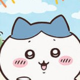

치이카와랑 일본어 공부
보고 싶은 걸 골라요

오사카 여행 일본어 NEW여행 필수 문장 · 다음에 배울 문법 · 문장 만들기·써 보기

히라가나 획 쓰기하루 한 행씩 외우고, 손가락으로 직접 써서 채점받기
히라가나 시험 NEW30문제로 실력 확인 · 읽기·고르기·단어·직접 쓰기 채점
가타카나 획 쓰기 NEW히라가나 다음 단계 · 메뉴판 외래어 읽기 · 헷갈리는 シ·ツ 구분

인칭 대명사 문제집 NEWわたし・あなた・かれ · 문장 만들기 · 일본어로 써 보기
인칭 대명사 퀴즈 NEW뜻·읽기·빈칸·상황 15문제 · 바로 채점

지시대명사 문제집 NEWこれ・それ・あれ・どれ · 문장 만들기 · 일본어로 써 보기
치이카와랑 일본어진짜 말투 · 리액션 · 요즘 말 · 여행 회화